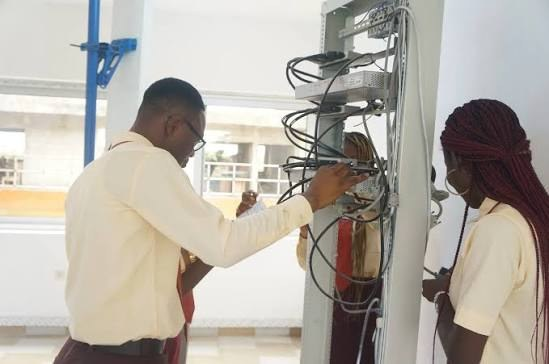
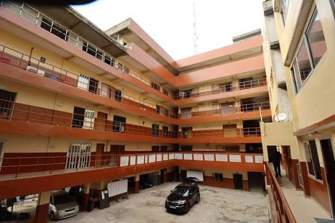

Sciences et Technologies
- Réseaux informatiques et télécommunications
- Systèmes informatiques et logiciels
- Systèmes industriels
- Génie électrique et énergies renouvelables
- Froid et climatisation
Depuis 1992, l’Université Africaine de Technologie et de Management accompagne ses étudiants de la salle de cours jusqu’à l’emploi : 23 filières agréées en sciences, agronomie, droit et gestion.
Se pré-inscrire Nous contacterNos formations
Quatre domaines, de la licence au master, en présentiel ou à distance.
Sur le terrain
Chez UATM-GASA Formation, la rigueur académique va de pair avec l’immersion technique. Les étudiants en réseaux, en systèmes et en énergie travaillent sur de vrais équipements, pas seulement sur des schémas.
Cette pratique prépare à l’insertion professionnelle, l’objectif affiché de l’université depuis sa création.

Nos campus
Le siège est à Cotonou, au quartier Gbégamey. D’autres sites accueillent les étudiants dans le sud du pays.

2e rue à gauche après le CEG Gbégamey
Cotonou, Bénin · 04 BP 1361 Cotonou
Remplissez votre dossier de pré-inscription en quelques minutes, ou posez-nous vos questions.
Faire ma pré-inscription Nous écrire